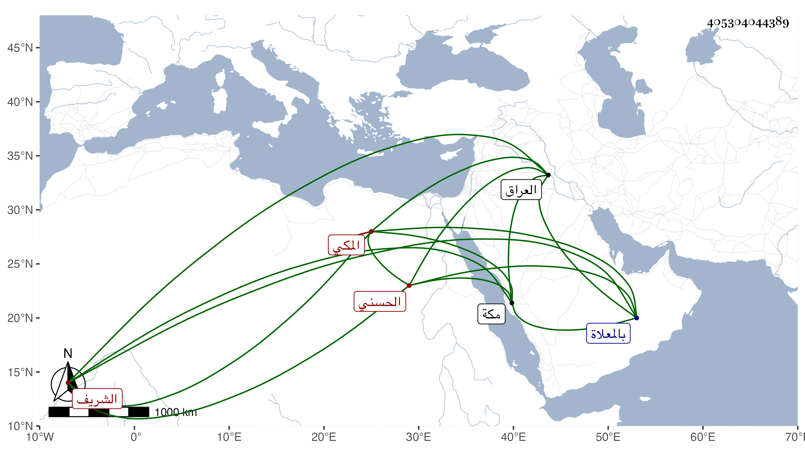

0902Sakhawi.DawLamic.ITO20230111-ara1.EIS1600.405304044389
Biography ID: 405304044389
668
محمد بن سيف بن أبي نمى محمد بن أبي سعد حسن بن علي بن قتادة الشريف الحسني المكي ذكره الفاسي وقال : كان من أعيان الأشراف آل أبي نمى وأقربهم نسبا إليه فإنه لم يكن بينه وبين أبي نمى إلا والده سيف . ودخل العراق طلبا للرزق ولم ينل طائلا وعرض له بياض بأخرة . ومات في جمادى الأولى سنة ست وعشرين بمكة ودفن بالمعلاة وهو في عشر السبعين ظنا.
